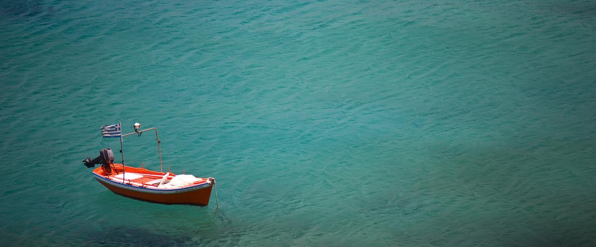

Der Text läuft um das Bild herum, nicht daneben in einer eigenen Spalte. Ein 4:3-Bild in einer Rasterspalte lässt neben sich eine Textspalte übrig, in der sechs Wörter pro Zeile stehen.

Ein Seitenverhältnis für alles: 4:3 im Querformat. Karten, Rubrik-Kacheln, Artikelköpfe. Vorher war es 2:3 im Hochformat, aus denselben Dateien beschnitten — ein hochkantes Bild neben einer Textspalte macht die Karte so hoch wie das Bild statt so hoch wie der Text, und die Bilder dieses Blogs sind Straßen, Skylines und Bildschirme: Querformat-Motive, aufrecht gezwungen.
Sepia ist die Hausbehandlung, keine Entscheidung pro Bild. Sie holt jedes Foto, egal mit welcher eigenen Palette, ins Gold. Volle Farbe ist die Belohnung fürs Überfahren, in 0,3 s. Der Rahmen wird nie eingefärbt — nur das Bild.
Der Text fliegt um das Bild. Die Figur ist float: left mit min(46%, 22rem), keine Rasterspalte — ein Querformat-Bild in eigener Spalte lässt daneben eine Textspalte übrig, in der sechs Wörter pro Zeile stehen. Unter 640 px fällt der Float weg und das Bild steht über dem Text. Der Behälter braucht .at-flow, sonst fällt er hinter das Bild zurück. Ausnahme sind Notizkarten: dort ist das Bild Hintergrund über die ganze Fläche, das Zitat liegt darüber.
Die Position gehört zum Bild. Es sitzt 1,5 em links von und 1,5 em unter der oberen Ecke seines Behälters und ragt links heraus. Dadurch liest es sich als aufgelegt, nicht als hineingeschnitten — das ist derselbe Versatz wie bei den Kartencovern und der Notizkarte, und er ist der Grund, warum .at-card nicht beschneidet. 12 px Radius, gepaarter Schatten, Bildunterschrift als deckende Leiste über der Unterkante.